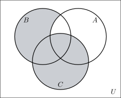

2.1 From counting numbers to real numbers
Definition 2.1. The natural numbers are the counting numbers, \[\mathbb {N}=\{1,2,3,4,\ldots \}.\] Including zero gives the whole numbers, \[W=\{0,1,2,3,4,\ldots \},\] and including the negatives gives the integers, \[\mathbb {Z}=\{\ldots ,-3,-2,-1,0,1,2,3,\ldots \}.\]

Each set contains the one before it: \[\mathbb {N}\subset W\subset \mathbb {Z}.\]
Dividing one integer by another does not usually give an integer, and that is what the next set is for.
Definition 2.2. A rational number is any number that can be written as a fraction of two integers with non-zero denominator: \[\mathbb {Q}=\left \{\frac {p}{q} : p,q\in \mathbb {Z},\ q\neq 0\right \}.\]
Every integer is rational, since \(-3=\frac {-3}{1}\). So the chain extends: \[\mathbb {N}\subset W\subset \mathbb {Z}\subset \mathbb {Q}.\]
Remark 2.3. In decimal form a rational number always does one of two things:
- it terminates, as \(\frac {3}{4}=0.75\); or
- it recurs, as \(\frac {23}{11}=2.090909\ldots =2.\overline {09}\), where the bar marks the block that repeats forever.
Nothing else can happen. A decimal that neither stops nor settles into a repeating block is not rational.
That last sentence works in reverse too, and gives a method: any recurring decimal can be turned back into a fraction.
Example 2.4. Express each recurring decimal as a fraction in its lowest terms.
- \(0.\overline {45}\)
- \(2.\overline {3}\)
- \(0.1\overline {6}\)
Solution. The trick in every case is to multiply by a power of \(10\) chosen so that the recurring parts line up, then subtract to cancel them.
(a) The block \(45\) has two digits, so multiply by \(10^2=100\). \begin {align*} \text {Let}\quad x &= 0.454545\ldots \\ 100x &= 45.454545\ldots \end {align*}
Subtracting the first line from the second, the endless tails cancel exactly: \[100x-x=45.454545\ldots -0.454545\ldots =45\] \[\implies \quad 99x=45\quad \implies \quad x=\frac {45}{99}=\frac {5}{11}.\]
(b) One recurring digit, so multiply by \(10\). \begin {align*} \text {Let}\quad x &= 2.3333\ldots \\ 10x &= 23.3333\ldots \end {align*}
\[10x-x=21\quad \implies \quad 9x=21\quad \implies \quad x=\frac {21}{9}=\frac {7}{3}.\]
(c) Here the \(1\) does not recur but the \(6\) does, so two multiplications are needed — one to step past the non-recurring digit, one to span the block. \begin {align*} \text {Let}\quad x &= 0.16666\ldots \\ 10x &= 1.6666\ldots \\ 100x &= 16.6666\ldots \end {align*}
Now subtract the second from the third, since those two have matching tails: \[100x-10x=15\quad \implies \quad 90x=15\quad \implies \quad x=\frac {15}{90}=\frac {1}{6}.\]
Check. \(1\div 6=0.1666\ldots \), as required.
Note 2.5. Subtract the two lines whose tails match. In part (c), subtracting \(x\) from \(100x\) would not work, because \(0.1666\ldots \) and \(16.6666\ldots \) do not have the same digits after the point.
Definition 2.6. The real numbers \(\mathbb {R}\) are all the numbers that correspond to points on a number line. A real number that cannot be written as a fraction of integers is called irrational.
Examples of irrational numbers are \(\sqrt {2}=1.41421\ldots \), \(\sqrt {5}\) and \(\pi =3.14159\ldots \) Their decimals run forever without ever settling into a repeating block. Together, \[\mathbb {N}\subset W\subset \mathbb {Z}\subset \mathbb {Q}\subset \mathbb {R},\] and the irrationals are exactly what is left of \(\mathbb {R}\) after \(\mathbb {Q}\) is removed.